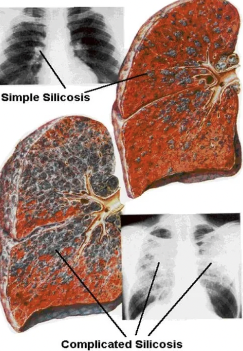

The Longest Word
Pneumonoultramicroscopicsilicovolcanoconiosis, is a contender for the longest word in the English language. This term consists of 45 letters, and is frequently recognised as the longest word in the English language. Pneumonoultramicroscopicsilicovolcanoconiosis designates a lung disease that results from inhaling extremely fine silicate or quartz dust, particularly in settings like mines or quarries where volcanic ash or silica dust is common. Medically, it describes a specific type of pneumoconiosis, which involves lung inflammation caused by inhaling particulate matter. Interestingly, the origin of this word is not entirely scientific; it was invented in 1935 by Everett Smith, who was the president of the National Puzzlers' League. His goal was to create the longest possible word in English as a playful linguistic exercise. Although it appears in numerous dictionaries, its legitimacy as a medical term has been debated since it was crafted more as a curiosity than as a term used in genuine medical contexts. This situation underscores the contrast between practical language use and the creative formation of words that may not be intended for everyday application.
Source: Titin
Another lengthy word, hippopotomonstrosesquipedaliophobia, contains 35 letters and ironically refers to the fear of long words. This term serves as a humorous example of linguistic playfulness, as it both characterises and exemplifies the very phenomenon it describes. While not commonly found in clinical psychology or psychiatry, it illustrates how language can be manipulated to create self-referential terms that highlight its own characteristics.
'Titin'
The longest word in any language, however, is often cited as the chemical name for titin, a protein with an astonishing 189,819 letters. Titin is recognised as the largest known protein in the human body and plays a crucial role in muscle contraction, particularly within striated muscle tissues such as skeletal and cardiac muscles. Its full systematic name is an extensive description of its amino acid sequence and follows the rules established by organic chemistry for naming compounds. Titin consists of over 38,000 amino acids arranged in a specific sequence and has a molecular weight of approximately 3,000 kDa. The protein's structure includes numerous repeating domains that interact to provide elasticity and strength to muscle fibres. The extraordinary length of titin’s name arises from the systematic concatenation of amino acid names that comprise the protein. The impracticality of using titin's full name, which we will find taking hours to pronounce, means that scientists typically refer to it simply as "titin" or use its symbol (TTN) in scientific literature. This lengthy nomenclature just comes to show how chemical naming conventions can produce extraordinarily long terms that are not suited for casual conversation or writing. While it may be argued that the systematic name of titin would not classify as a word, due to its technical derivation and lack of usage in spoken language, titin should surely win the prize for being the longest word in the scientific community, right?
The full systematic name of titin: https://www.slideshare.net/slideshow/titin-name/33821358

Source: Simple and Complex Silicosis